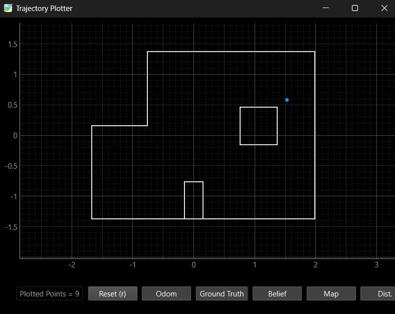
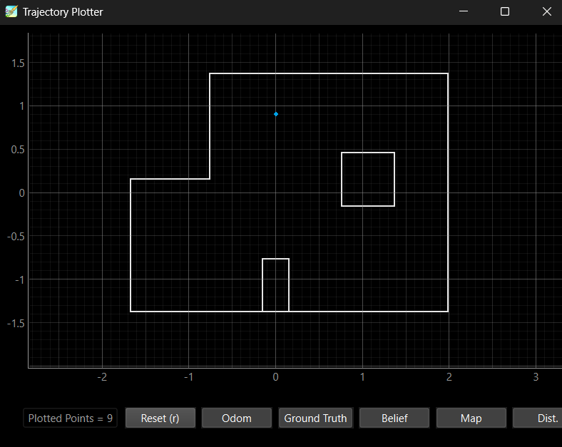
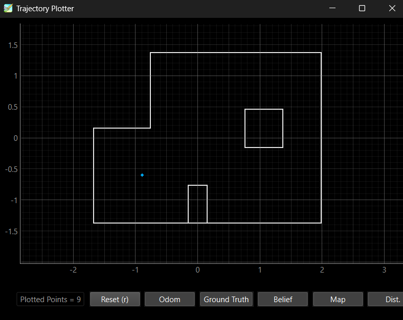
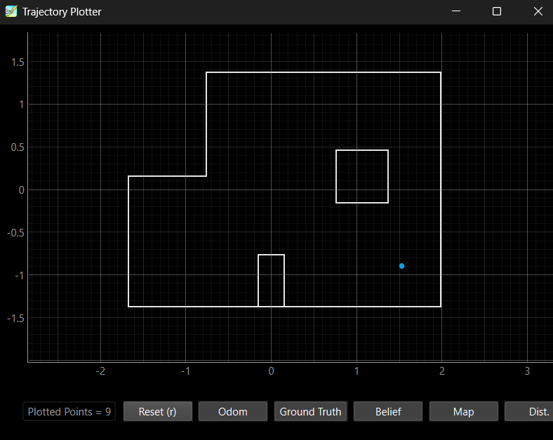

Lab 11: Localization (real)
Objective
The goal of this lab was to localize the real robot using the Bayes filter’s update step only based on a full 360° sweep of ToF sensor readings. Unlike in the simulation lab last time, no prediction step was performed due to noisy motion.
The robot was placed at the following known poses:
(-3, -2, 0°)
(0, 3, 0°)
(5, -3, 0°)
(5, 3, 0°)
These correspond to:
(-0.914, -0.610, 0°)
(0.000, 0.914, 0°)
(1.524, -0.914, 0°)
(1.524, 0.914, 0°)
Observation Loop Implementation
I implemented the perform_observation_loop() method using BLE communication and asynchronous notifications. The robot completed a controlled spin using PID orientation control, logged sensor readings, and transmitted them over BLE. I had to modify my lab 9 code.
Previously I would just start and stop in my code. I added and modified commands.
case START:
{
start_IMU = true;
start_controller = true;
s = 0;
f = 0;
w = 0;
ang_count = 0;
Serial.println("RUN_TURN initiated");
break;
}
case ANGLE_DATA:
{
for (int i = 0; i < s; i++) {
tx_estring_value.clear();
tx_estring_value.append(DCM_time[i]);
tx_estring_value.append("|");
tx_estring_value.append(r_yaw[i]);
tx_estring_value.append("|");
tx_estring_value.append(d2_array[i]);
tx_characteristic_string.writeValue(tx_estring_value.c_str());
delay(20);
}
tx_estring_value.clear();
tx_estring_value.append("done");
tx_characteristic_string.writeValue(tx_estring_value.c_str());
Serial.println("GET_ANGLE_DATA complete");
break;
}
I also added a wait function.
if (curr_state == WAIT) {
if (distanceSensor_2.checkForDataReady()) {
int dist = distanceSensor_2.getDistance();
distanceSensor_2.clearInterrupt();
distanceSensor_2.stopRanging();
data_points[num_points++] = dist;
if (num_points >= 5) {
int avg_dist = 0;
for (int k = 0; k < 5; k++) {
avg_dist += data_points[k];
}
avg_dist /= 5;
d2_array[f++] = avg_dist;
r_yaw[s++] = DCM_yaw[w-1];
num_measurements++;
num_points = 0;
if (num_measurements < 18) {
target = compute_next(target);
curr_state = PID;
} else {
stop_motors();
start_controller = false;
start_IMU = false;
curr_state = IDLE;
tx_estring_value.clear();
tx_estring_value.append("done");
tx_characteristic_string.writeValue(tx_estring_value.c_str());
Serial.println("Observation loop complete");
}
}
}
}
This worked in conjunction with the python below.
async def perform_observation_loop(self):
self.ble.send_command(CMD.START, "")
is_done = False
def done_handler(_uid, response):
nonlocal is_done
if response.decode() == "done":
is_done = True
self.ble.start_notify(ble.uuid['RX_STRING'], done_handler)
while not is_done:
await asyncio.sleep(1)
self.ble.stop_notify(ble.uuid['RX_STRING'])
data_distance = []
data_yaw = []
i = 0
def data_handler(_uid, response):
nonlocal i, is_done
time, yaw, dist = map(float, response.decode().split("|"))
data_yaw.append(yaw * np.pi / 180)
data_distance.append(dist)
i += 1
if i == 24:
is_done = True
self.ble.start_notify(ble.uuid['RX_STRING'], data_handler)
self.ble.send_command(CMD.ANGLE_DATA, "")
while not is_done:
await asyncio.sleep(1)
self.ble.stop_notify(ble.uuid['RX_STRING'])
return ((np.array(data_distance)[np.newaxis].T + 75) / 1000, np.empty((1, 1)))
The order worked like this: I would send START and used the notification handler to set is_done when it completed. Then I waited on a coroutine wait_is_done. This waited until is_done was set. Then I sent the ANGLE_DATA command to gather data. This was repeated for all 24 points.
Localization Results
The table below shows the comparison between ground truth and estimated belief (maximum belief cell) after each scan.
Ground Truth (ft) |
Ground Truth (m) |
Belief Estimate (m) |
Belief Orientation (°) |
Probability |
|---|---|---|---|---|
(-3, -2) |
(-0.914, -0.610) |
(-0.914, -0.610) |
10 |
1.0 |
(0, 3) |
(0.000, 0.914) |
(0.000, 0.914) |
10 |
1.0 |
(5, 3) |
(1.524, 0.914) |
(1.524, 0.610) |
10 |
1.0 |
(5, -3) |
(1.524, -0.914) |
(1.524, -0.914) |
10 |
1.0 |
Plots of the belief distribution and scan data are shown below for each location.
   {kind=link}
{kind=link}
{kind=link}
{kind=link}
Observations
The robot localized within a grid cell in each pose, which was much fast than I thought it would.
Reflection
This lab really demonstrated how cool the bayes filter is in the real world. The bayes filter was successfully able to infer pose from sensor readings despite sensor noise, imperfect rotation, and discretization. It was able to maintain accuracy and robustness in localization.
My computer graphics glitched a lot, but I was glad I was able to get plots.
Acknowledgments
Thank you to the Fast Robots Staff for providing the jupyter notebook files. It was useful. I took heavy inspiration from my friend Aidan McNay. Thanks Aidan.